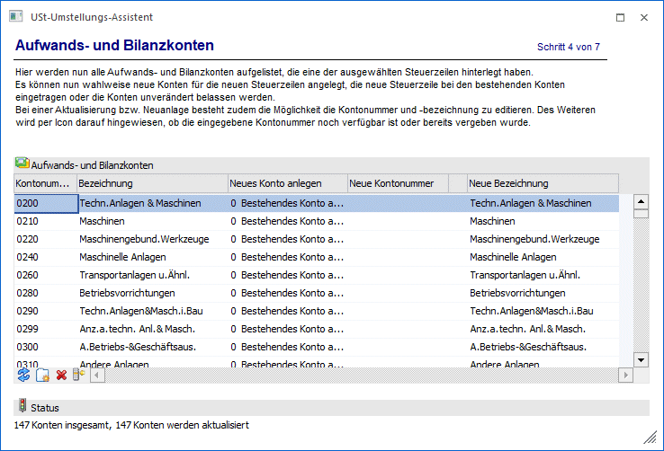
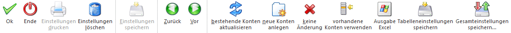

In diesem Schritt werden alle Aufwands- und Bilanzkonten aufgelistet, die eine der ausgewählten Steuerzeilen hinterlegt haben.
Für jedes Konto steht zur Auswahl:
ü 0 Bestehendes Konto
aktualisieren
Im Kontenstamm wird die alte Steuerzeile durch die neue
Steuerzeile ersetzt. Die neue Kontenbezeichnung kann editiert werden.
ü 1 Neues Konto anlegen
Das alte
Konto bleibt unverändert, ein neues Konto wird angelegt und bekommt die neue
Steuerzeile eingetragen. Es besteht immer die Möglichkeit die Kontonummer und
-bezeichnung zu editiert. Des Weiteren wird per Icon darauf hingewiesen, ob die
eingegebene Kontonummer noch verfügbar ist oder bereits vergeben wurde.
Die
KORE-Stammdaten (Kostenart, Kostenstelle, Kostenträger) werden aus dem alten
Sachkonto übernommen.
ü 2 Keine Änderung
Das alte Konto
bleibt unverändert und es wird auch kein neues Konto angelegt.
ü 3 Vorhandenes Konto
verwenden
Es kann ein Konto ausgewählt werden, das bereits die neue
Steuerzeile hinterlegt hat. Das bedeutet, dass die Umstellung für eine
Steuerzeile bereits durchgeführt wurde, nur einige Konten umgestellt wurden und
bei einer erneuten Umstellung die gleiche Steuerzeile ausgewählt wird und dann
ein bereits zuvor umgestelltes Konto hier eingetragen werden kann.
Status
Unterhalb der Tabelle existiert eine Statuszeile, welche die Eingaben des aktuellen Schrittes zusammenfasst.
Buttons

Ø Ok
Über den Button Ok" gelangt man sofort in den letzten Schritt des Assistenten.
Ø Ende
Durch Drücken des Buttons "Ende" bzw. der Taste ESC wird das Fenster geschlossen.
Ø Einstellungen löschen
Über den Button "Einstellungen löschen" werden gespeicherte Einstellungen gelöscht.
Ø Zurück
Durch Anwahl des Buttons "Zurück" kann in den vorherigen Schritt des Assistenten gewechselt werden.
Ø Vor
Durch Anwahl des Buttons "Vor" kann in den nächsten Schritt des Assistenten gewechselt werden.
Ø Bestehende Konten aktualisieren
Über diesen Button wird in allen Konten die Auswahl "Bestehendes Konto verwenden" eingetragen.
Ø Neue Konten anlegen
Über diesen Button wird in allen Konten die Auswahl "Konten aktualisieren" eingetragen und die nächste freie Kontonummer vorgeschlagen.
Ø Keine Änderung
Über diesen Button wird in allen Konten die Auswahl "Keine Änderung" eingetragen.
Ø Vorhandene Konten verwenden
Über diesen Button wird in allen Konten die Auswahl "Vorhandene Konten verwenden" eingetragen.
Ø Ausgabe Excel
Durch Anwahl des Buttons "Ausgabe Excel" wird der Inhalt der Tabelle an Microsoft Excel übergeben.
Ø Tabelleneinstellungen speichern
Die Spalten einer Tabelle können grundsätzlich an beliebige Positionen verschoben, bzw. in der Breite entsprechend angepasst werden. Durch Anwahl des Buttons "Tabelleneinstellungen speichern" werden die Einstellungen benutzerspezifisch gespeichert und bei dem nächsten Aufruf des Programmpunktes wieder vorgeschlagen.
Ø Gesamteinstellungen speichern
Im Gegensatz zu "Tabelleneinstellungen speichern" können mit "Gesamteinstellungen speichern" mehrere Tabellenaufbauten gespeichert und nach Wunsch geladen werden. Zusätzlich werden Sonderfunktionen der Tabelle (z.B. "Spalte gruppieren") ebenfalls bei der Speicherung bedacht.